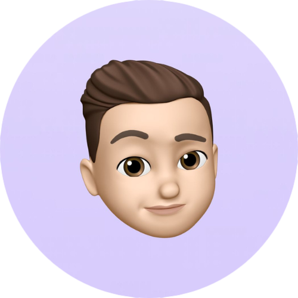

<body>
  

<div>

  <div class="row">
    <div class = "about-wrapper">
      <div class = "about-left">
        <div class = "about-left-content">
          <div>
            <div class = "shadow">
              <div class = "about-img">
                
              </div>
            </div>

            <h2 id="nombre">{{persona.nombre}} {{persona.apellido}}</h2>
            <h3>Full Stack Web Developer Jr
            </h3>
          </div>

          <ul class = "icons">
            <button type = "button" class = "btn btn-pink" >CONTACTARME </button>
          </ul>
          

        </div>
        
      </div>

      <div class = "about-right">
        <h1>HOLA<span>!</span></h1>
        <h2>Esto es lo que soy y lo que hago</h2>
        <div class = "about-btns">
          <a href="../../../assets/Curriculum+Carlos+Massa+Beloso.pdf" target="_blank"><button type = "button" class = "btn btn-pink">resume / CV</button></a>
          <a href="https://github.com/carlosmassaa" target="_blank"><button type = "button" class = "btn btn-white"> Git hub</button></a>
        </div>

        <div class = "about-para">
          <p>Soy un programador junior. Me
            caracterizo por nunca parar de aprender
            e incorporar conocimientos nuevos.
            Desde muy chico siempre me interesó la
            computación y desde ahí nunca paré de
            aprender todo lo relacionado con ella.
            Eso hizo que me volcara por el
            secundario especializado en
            computación donde aprendí distintos
            lenguajes de programación, análisis de
            sistemas, base de datos.
            Una vez sabiendo lo que me gustaba,
            seguí haciendo cursos por fuera del
            técnico, aprendiendo distintos lenguajes
            y de forma autodidacta.</p>
          
        </div>
        
      </div>
    </div>
  </div>
</div>
</body>